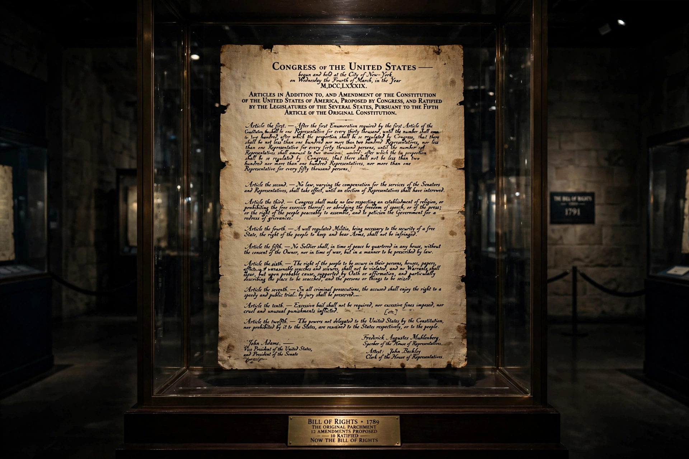

United States Bill of Rights
From Wikipedia, the free encyclopedia
| United States Bill of Rights | |
|---|---|
 | |
| Created | 25 September 1789 |
| Ratified | 15 December 1791 |
| Location | National Archives, Washington, D.C. |
| Author | James Madison (principal drafter) |
| Purpose | First ten amendments to the U.S. Constitution, limiting federal power and guaranteeing individual liberties |
The United States Bill of Rights comprises the first ten amendments to the United States Constitution. Proposed following the often bitter 1787–88 debate over ratification of the Constitution, and written to address the objections raised by Anti-Federalists, the Bill of Rights amendments add specific guarantees of personal freedoms and rights, clear limitations on the government's power, and explicit declarations that all powers not specifically granted to the federal government by the Constitution are reserved to the states or the people.
Origins
At the Constitutional Convention of 1787, George Mason's proposal for a bill of rights was rejected, and the omission became a central Anti-Federalist argument against ratification. Federalists, including James Madison, promised amendments as a condition of ratification in several key states. Madison shepherded a set of amendments through the First Congress, drawing on state declarations of rights such as Virginia's of 1776 and on the English Bill of Rights of 1689.
The amendments
The First Amendment protects freedoms of religion, speech, the press, assembly and petition. The Second protects the right to keep and bear arms. The Third prohibits quartering soldiers in homes without consent. The Fourth bars unreasonable searches and seizures. The Fifth guarantees due process, grand jury indictment, and protection against self-incrimination and double jeopardy. The Sixth ensures speedy, public trials with counsel. The Seventh preserves jury trials in civil cases. The Eighth forbids excessive bail and cruel and unusual punishment. The Ninth states that enumerated rights do not deny others retained by the people, and the Tenth reserves undelegated powers to the states or the people. Congress approved twelve amendments in 1789; ten were ratified by 1791. One of the remaining two became the Twenty-seventh Amendment in 1992.
Application and incorporation
Originally the Bill of Rights limited only the federal government — confirmed in Barron v. Baltimore (1833). Beginning in the 20th century, the Supreme Court used the Due Process Clause of the Fourteenth Amendment to "incorporate" most of its guarantees against the states as well, transforming American constitutional practice. See also Constitution of the United States.